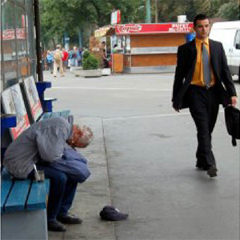
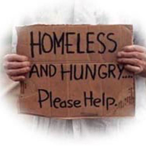
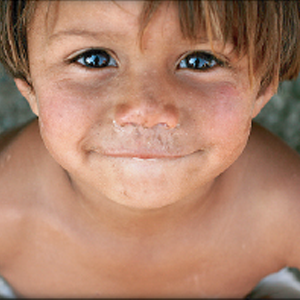
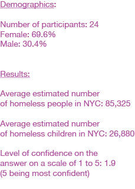

Process:
|  |  |  |
|
The gap between the rich and the poor in NYC caught my attention and wanted to design a solution to reduce the gap. |
Homelessness is one aspect of the gap, and I wanted to tackle with the issue through raising awareness of homelessness. |
I then zeroed in on homeless children because the hopefulness and innocent of children make people feel more accessible to the issue. |
The identity of Uniti represents the connection and union between two unities. The Identity video has gone through several stages as following:

This video shows a demonstration of the prototype. The main body of the prototype is an 22" * 34" poster, on which there is a fact book that the user can flip through and read real facts about homeless children in NYC. Also on the poster are a request asking people to interact with the prototype and a counter that keeps track of the number of people who have interacted with the piece. The interaction is to move a pebble into a glass jar, which is placed under the poster, and after the users participate, they will be quickly interviewed and given a little card requesting them to tweet to Uniti.
We conducted a survey on people's estimate on the number of homeless children in NYC, and here are the results:
